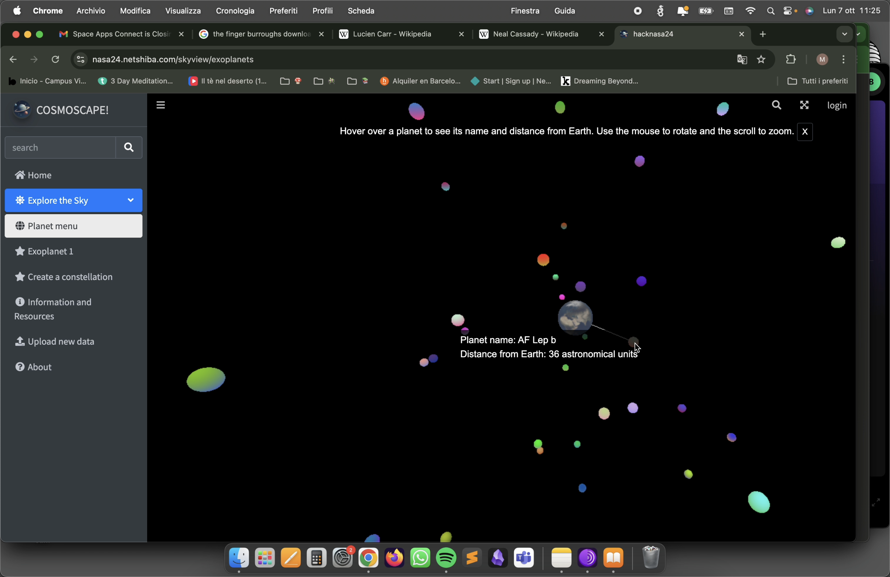
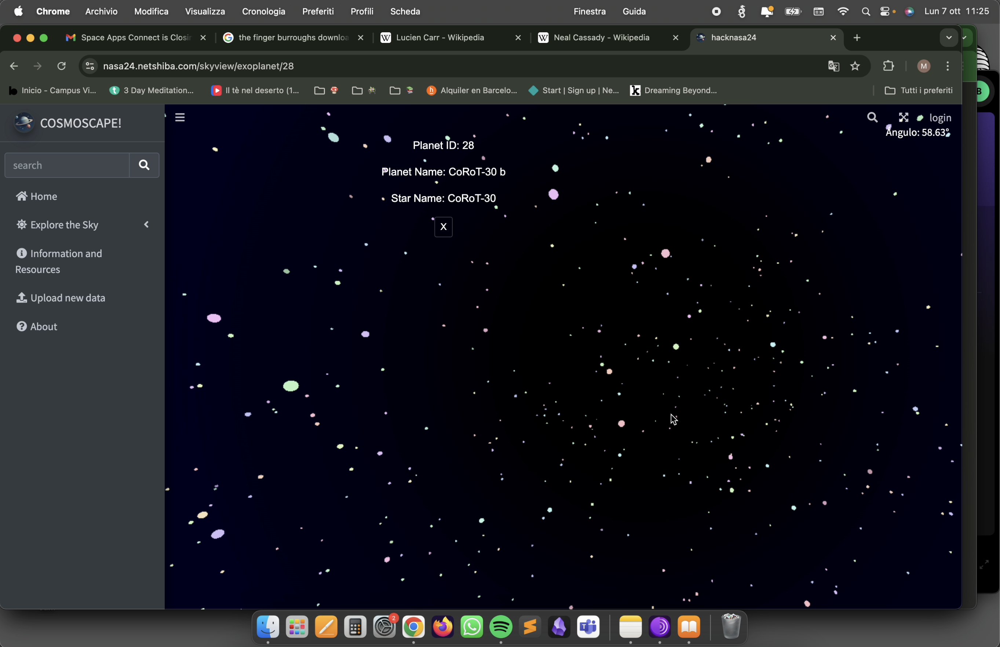
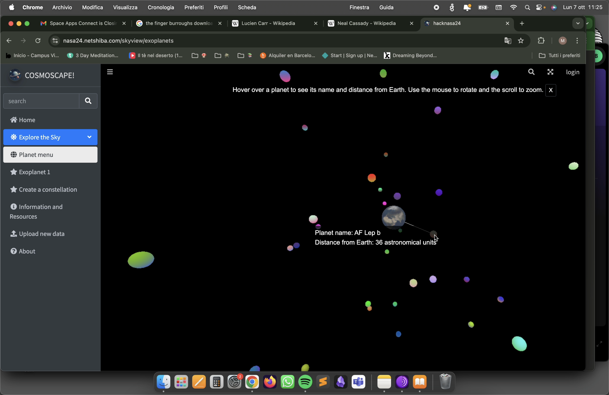
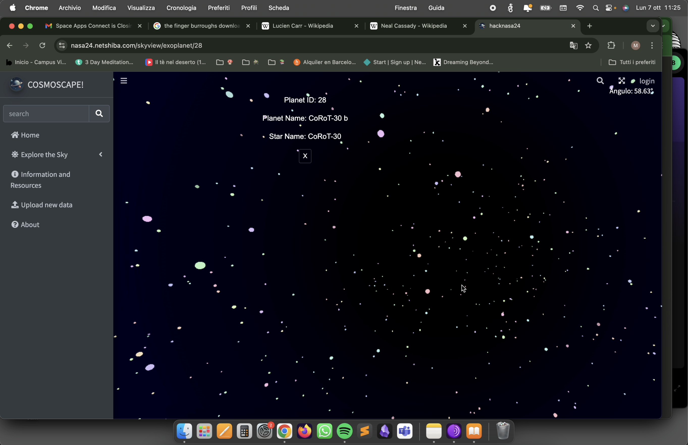

>>> code
>>> pseudo-code
>>> code
>>> pseudo-code
Cosmoscape!
[c++, blade, php, hack, C#, js...]
Exosky! project, NASA SpaceApp Challenge 2024, Barcelona.
For the NASA 2024 Hackathon, I collaborated with five others on a project called
Cosmoscape.
The idea behind Cosmoscape is to reimagine how the night sky would look from various
exoplanets. Using real astronomical data, we transformed star coordinates to show the sky from the
perspective of 50 different exoplanets.
The interactive website we built allows users to explore these unique skies, create and name their own
constellations, and even vote for their favorites. To enhance the experience, users can download
exoplanet data or upload their own, adding new layers to the project. The goal of Cosmoscape is to make
astronomy more accessible and engaging, and to spark curiosity about space exploration among young
people.
In this project, I was responsible for developing the 3D interactive maps of the night sky using
Three.js.
 


